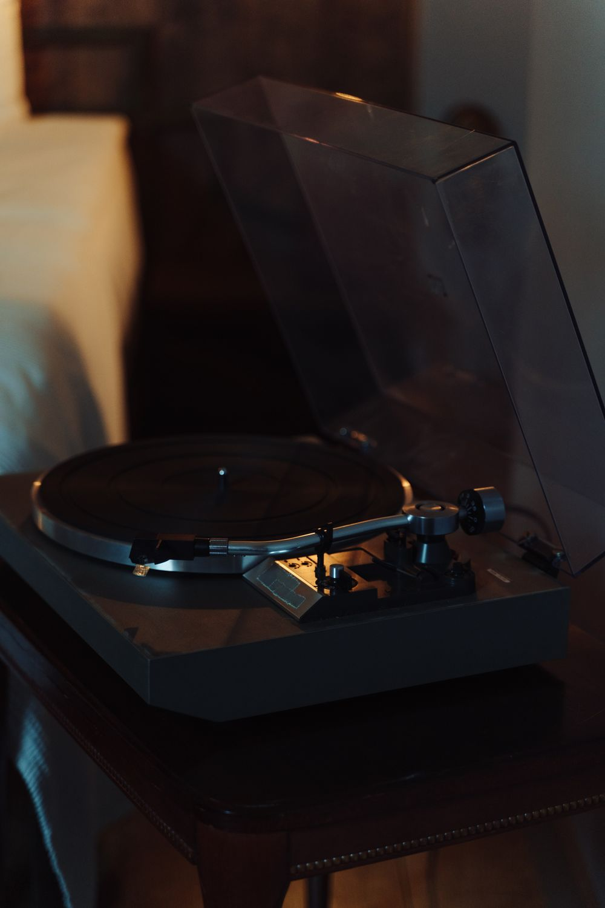
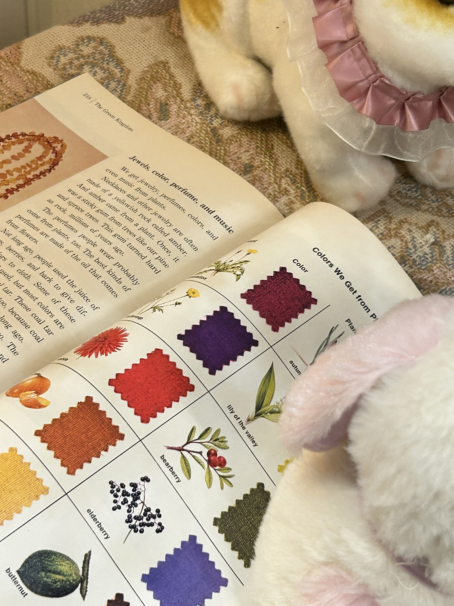

My calm and
quiet day.
ต่อให้วัน ๆ นึงจะวุ่นวายแค่ไหนเราก็สามารถเปลี่ยนให้เป็นวันที่สงบ
หรือวันที่สนุกได้ด้วยเสียงเพลง


คำว่า "โอโนชู" (오노추) เป็นคำย่อภาษาเกาหลีที่มาจาก
(โอ-นือ-เร โน-แร ชู-ชอน)
ซึ่งแปลว่า "เพลงแนะนำสำหรับวันนี้"
พอได้นั่งฟังเฉย ๆ
ก็ได้ยินเสียงที่เคยมองข้าม
บางเพลงที่ไม่ค่อยได้เปิด กลับชอบขึ้นมาเฉยเลย
Nowhere
to be.
หลีกหนีจากความวุ่นวาย ทิ้งตัวลงมุมโปรดกับหนังสือสักเล่ม แล้วปล่อยให้เพลย์ลิสต์ที่คุ้นเคยทำหน้าที่แทนคำพูด
บางหน้ากระดาษอาจถูกเปิดผ่านไปอย่างรวดเร็ว เช่นเดียวกับบางบทเพลงที่ถูกเล่นวนซ้ำ เพื่อซึมซับและบันทึกความรู้สึกของวันนี้เอาไว้ในพื้นที่ส่วนตัว
Until the
new
dawn.
ปล่อยให้เพลย์ลิสต์โปรดดำเนินต่อไปท่ามกลางความเงียบงันของยามค่ำคืน ให้ทุกตัวโน้ตโอบกอดความรู้สึกและเยียวยาจิตใจ ดำดิ่งลงสู่ห้วงอารมณ์ของตัวเองอย่างอิสระในพื้นที่ที่ไม่มีใครรบกวน
ซึมซับทุกช่วงเวลาแห่งความสงบนี้ไว้เป็นเพื่อนร่วมทาง ตราบจนกว่าแสงแรกของวันใหม่จะทอประกาย
The collection